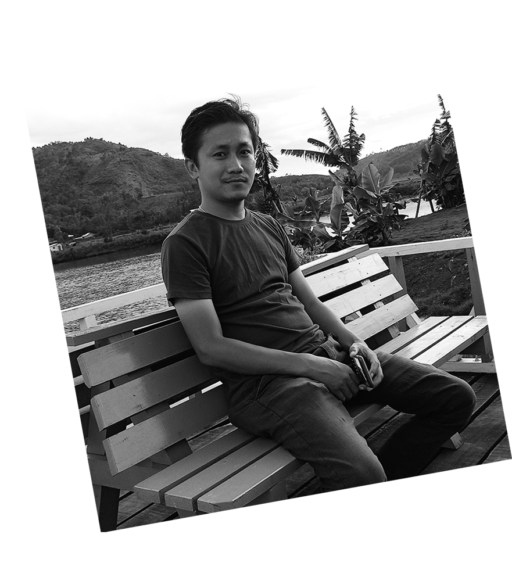

Hello everyone!!! Myself is Mr. Pangambam, a Senior Research Fellow (SRF) at Institute of Science, Banaras Hindu University (B.H.U.) Varanasi, India - 221005.
I obtained my Bachelor's degree in Physics (Hons.) with Mathematics and Computer Science from D.M. College of Science, Imphal (under Manipur University) in the year 2012, thereafter Master's degree in Computer Science from Banaras Hindu University (BHU), Varanasi in the year 2015. I passed the UGC - National Eligibility Test (NET) in Computer Science and Applications during my Master's studies and I was awarded the UGC's Junior Research Fellowship (JRF).
Currently, I am working towards Ph.D. in Computer Science from Institute of Science, Banaras Hindu University (BHU) under UGC's Junior Research Fellowship (UGC-JRF) scheme. My research work is being supervised by Prof. S. Karthikeyan, Department of Computer Science, Banaras Hindu University (BHU). My current research area includes Computational Intelligence, Deep Learning and its applications in Multispectral and Hyperspectral Image Analysis.
I take a lot of interest in listening music, singing, playing piano, harmonica and flutes.